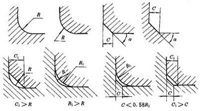

零件倒圆与倒角(摘自GB/T 6403.4-1986) |
||
直径D/mm |
R C |
|
R1/mm |
Cmax /mm |
|
（C＜0.58R1） |
||
～3 |
0.1 |
— |
～3 |
0.2 |
0.1 |
＞3～6 |
0.3 |
0.1 |
＞3～6 |
0.4 |
0.2 |
＞6～10 |
0.5 |
0.2 |
＞6～10 |
0.6 |
0.3 |
＞10～18 |
0.8 |
0.4 |
＞18～30 |
1 |
0.5 |
＞30～50 |
1.2 |
0.6 |
＞30～50 |
1.6 |
0.8 |
＞50～80 |
2 |
1 |
＞80～120 |
2.5 |
1.2 |
＞120～180 |
3 |
1.6 |
＞180～250 |
4 |
2 |
＞250～320 |
5 |
2.5 |
＞320～400 |
6 |
3 |
＞400～500 |
8 |
4 |
＞500～630 |
10 |
5 |
＞630～800 |
12 |
6 |
＞800～1000 |
16 |
8 |
＞1000～1250 |
20 |
10 |
＞1250～1600 |
25 |
12 |
注：α一般采用45°，也可采用30°或60°。 |
||